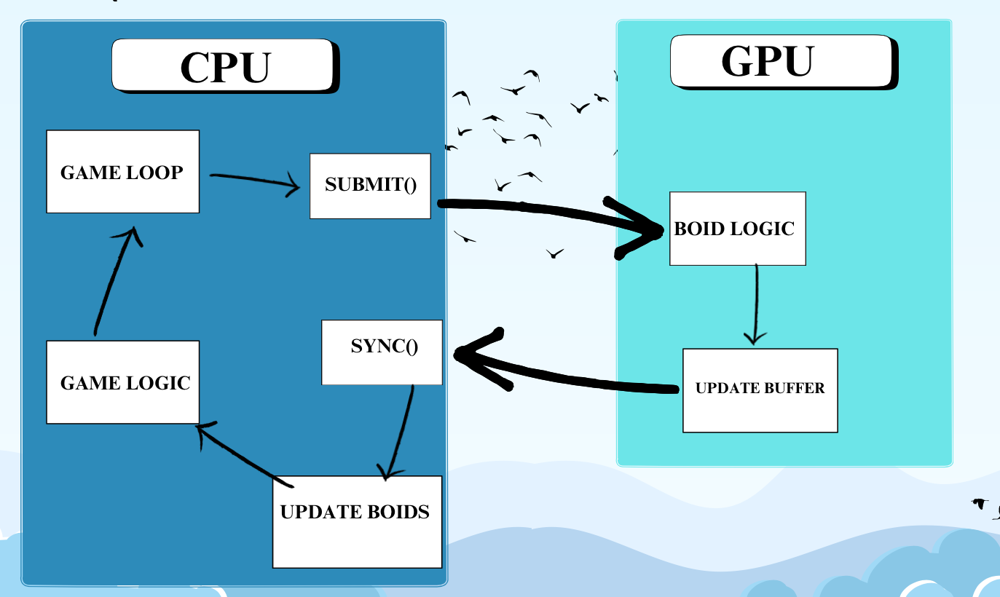
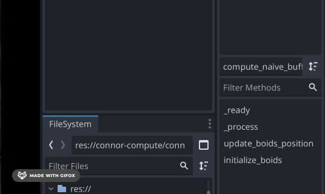
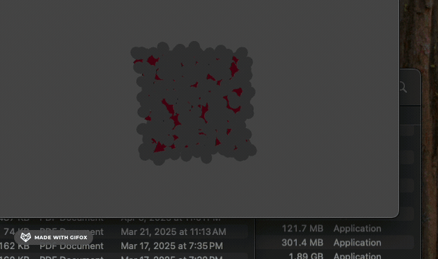
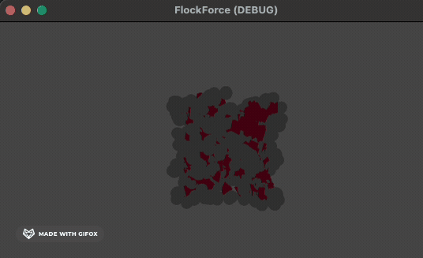
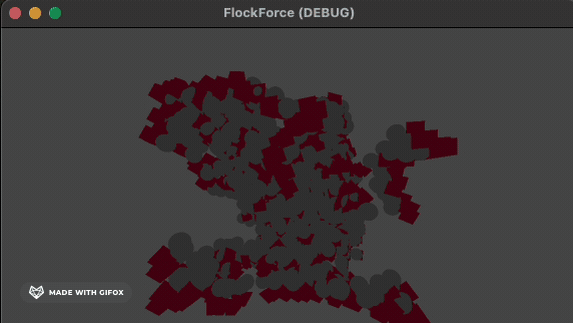
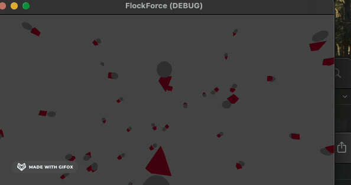
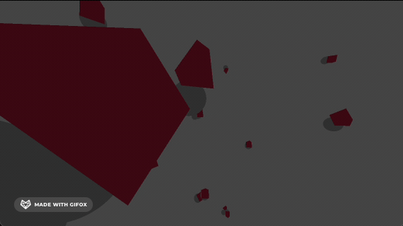

Team Members: Julian Pearson Rickenbach, Mark Yuzon, Connor Armstrong, John Yoon
CS184 Final Report
Abstract
FlockForce is a 3D boid simulation accelerated with compute shader and made in Godot Engine. Our team started out with a blank Godot project, and we ended up with a convincing Boids implementation in an easily extendable format. Our simulation uses the GPU to accelerate the calculation of positions and velocities, however, the rendering is still taken care of by Godot’s Forward+ rendering pipeline, meaning that the individual boids are still interactable at the game engine level. This affords the opportunity for the boids to interact with other components of the game engine, for example, the physics engine, where other implementations of compute shader boids would have the particles exist purely on the GPU. While our design choice comes at the cost of performance, we believe it to be a worthwhile tradeoff for the opportunities it affords for creative expression.
Technical Approach
FlockForce centers around the boid algorithm invented by Craig Reynolds in 1986, which approximates the behavior of animals that form flocks, swarms, or schools. The algorithm is inspired by research into birds, which found that the flocking behavior of starlings follows simple rules at the level of individual organisms. It makes sense then that the boids algorithm is also relatively simple, although tuning it to produce pleasing results is still an implementation-specific challenge. For our implementation, we followed a philosophy of starting simple and adding complexity as needed. Our first draft of boids was a CPU-driven program that performed the O(n^2) neighborhood search, where n is the number of boids. As the article by Craig Reynlods describes, the velocity of each boid at any given timestep is the sum of three vectors: cohesion, separation, and alignment. The cohesion vector points from a boid to the center of mass of its neighbors (within some neighborhood radius). The separation vector points away from the center of mass of neighbors that are too close (an inner radius). Finally, the alignment vector points in the direction of the average heading of its neighbors.
Creating the CPU boids implementation was worthwhile because it gave us both a sanity check and a benchmark for how much we could improve the performance. On an Apple M2 Pro, the CPU boids implementation was able to run smoothly for up to roughly 100 boids. This made sense as the algorithm has an O(n^2) time complexity, since each boid needs to check every other boid for presence in the local neighborhood.
After successfully implementing the CPU boids, we set out to offload the work to the GPU. This task was more difficult than we initially thought. Fortunately, Godot has a helpful abstraction for interacting with the GPU. Godot has a RenderingDevice abstraction that encapsulates the boilerplate of setting up bindings for buffers, uniforms, shaders, compute pipelines, and more. Still, though, we had to learn what is required in order to send data buffers to the GPU and dispatch calls to run the desired shader. Debugging and understanding the compute shader pipeline was where much of the effort went. The effort was worth it when we were able to achieve greater than 10x the number of boids on-screen as compared to CPU-boids.

CPU only: Demo 3
To get there, we started simple with basic tests of binding buffers to uniforms, setting up the uniform set and compute pipeline, and getting the data back from the storage buffers after the CPU synchronized with the GPU. From there, we could reason about loading the boid positions into buffers, sending them off to the GPU, and retrieving the updated positions and setting them on the CPU.
We had many, many bugs along the way. To name a few, we completely neglected having a swap buffer implementation initially (we were updating the boid positions and velocities in-place), which resulted in some slightly offsetting boid movement. To fix this we doubled our buffers. Positions and velocities would be read from buffers A and updated positions would be written to buffers B, then the roles of A and B would be swapped. This removes the data dependencies that in-place updates caused.
Another bug, which was much more pernicious than the previous one, was an issue with implicit padding of data in the arrays on the GPU. We had arrays of vec3s (3-Vectors in GLSL), which held positions and velocities. What we didn’t realize at the time is that, for some reason, an extra 4 bytes was inserted between vec3’s, causing very strange jittering behavior in the visualization due to the data being returned not being in the expected format (i.e. not being in the format we sent to the GPU). The fix was a quick one, on the CPU side of things, we simply inserted an extra float in the byte array that we pass to the GPU.
Problems Encountered and Solutions
Problem: We want to take our cpu boid implementation and add it to the gpu, so we can use it to speedup the algorithm, but we don’t know how to pass data between the CPU and the GPU Solution: Use SSBO (shader storage buffer objects) Admittedly this isn’t unique and is just how compute shaders worked, but we didn’t have a clue how compute shaders worked when we started and this was pretty cool.

Fig A: This was our first sign of being able to move boids from receiving the output of the gpu in the SSBO.
Problem: [Description of Problem 2 - e.g., Incorrect neighbor finding] Solution: [How you tackled it - e.g., Refined spatial hashing grid]

Fig B: The simulation with separate avoidance distance, small neighborhood size.
Problem: [Description of Problem 3 - e.g., Separation force too strong] Solution: [How you tackled it - e.g., Tuned separation weight and radius]

Fig C: The simulation with separate avoidance distance, small neighborhood size.
Problem: The boids are getting WAY too friendly, with a lower separation strength they are converging to a single point, but if we raise the separation strength they all zoom away from one another. Solution: Change the distance required to activate separation strength. With a smaller separation distance they can be pulled together but will stop at a distance instead of converging.

Fig D: This is prior to adding the avoidance distance, boids would converge at the extremities of the bounding box.
Problem: [Description of Problem 3 - e.g., Separation force too strong] Solution: [How you tackled it - e.g., Tuned separation weight and radius]
Fig E: Boids exhibiting excessive separation.
Problem: The boids are acting UP! We noticed flickering and added a debug routine to check if any boids were moving more than 1 full unit in a single timestep. Some were rapidly alternating between multiple positions. Solution: We researched more into the vec3 glsl datatype and discovered that they are padded to be 16 bytes! We then added another random float to our array to account for the padding.

Fig F: This is prior to noticing the padding discrepancy, some boids do not move while others bounce between a handful of positions.
Problem: [Description of Problem 3 - e.g., Separation force too strong] Solution: [How you tackled it - e.g., Tuned separation weight and radius]

Fig G: This was prior to discovering padding, we set the neighborhood size much too large resulting in all boids to match behavior.
Lessons Learned
We learned a number of things from completing this project, both in terms of technical skills and time management and project management. On the technical side we learned about the strengths and weaknesses of executing code on the cpu, while we enjoyed a huge amount of speedup from using the GPU’s many cores, the gpu is also much less flexible in terms of executing complex code with many branches, which restricted the steps we could take in our simulation. We also learned new debugging skills, as we no longer had access to good old-fashioned print statements, and we needed to debug the behavior of groups of particles instead of a single one. On the project management side, we learned about the importance of planning ahead. It can be super difficult to divide up work, especially when there is a topic that is new to all members. Together, we learned about the value of persistence in a project like this, and we collectively overcame the numerous bugs that popped up along the way.
![[Description of Demo GIF 1 - e.g., Initial boid setup]](flockforce/gifs/CPU_boids_1.gif)
![[Description of Demo GIF 2 - e.g., Cohesion behavior]](flockforce/gifs/CPU_boids_2.gif)
![[Description of Demo GIF 3 - e.g., Alignment behavior]](flockforce/gifs/CPU_boids_3.gif)
![[Description of Demo GIF 4 - e.g., Separation behavior]](flockforce/gifs/CPU_boids_4.gif)
![[Description of Demo GIF 5 - e.g., Combined behaviors]](flockforce/gifs/CPU_boids_5.gif)
![[Description of Demo GIF 1 - e.g., Initial boid setup]](flockforce/gifs/demo_gif_1.gif)
![[Description of Demo GIF 2 - e.g., Cohesion behavior]](flockforce/gifs/demo_gif_2.gif)
![[Description of Demo GIF 3 - e.g., Alignment behavior]](flockforce/gifs/demo_gif_3.gif)
![[Description of Demo GIF 4 - e.g., Separation behavior]](flockforce/gifs/demo_gif_4.gif)
![[Description of Demo GIF 5 - e.g., Combined behaviors]](flockforce/gifs/demo_gif_5.gif)
![[Description of Demo GIF 6 - e.g., Interaction with obstacle]](flockforce/gifs/demo_gif_6.gif)
![[Description of Demo GIF 7 - e.g., Large flock simulation]](flockforce/gifs/demo_gif_7.gif)